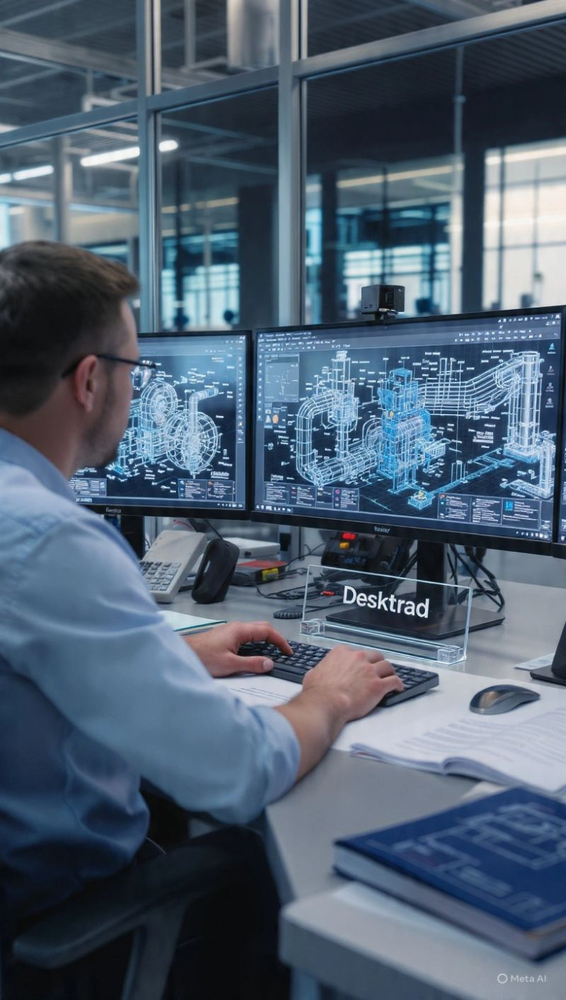
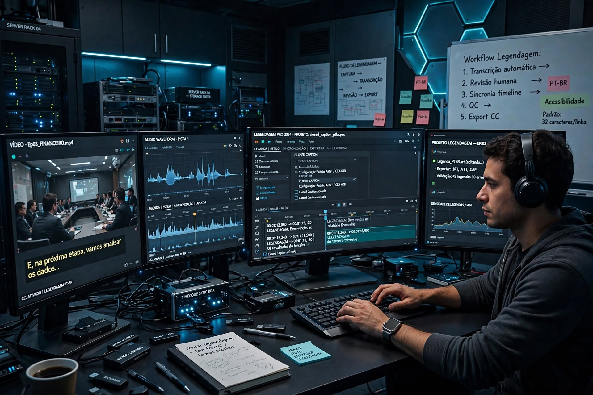
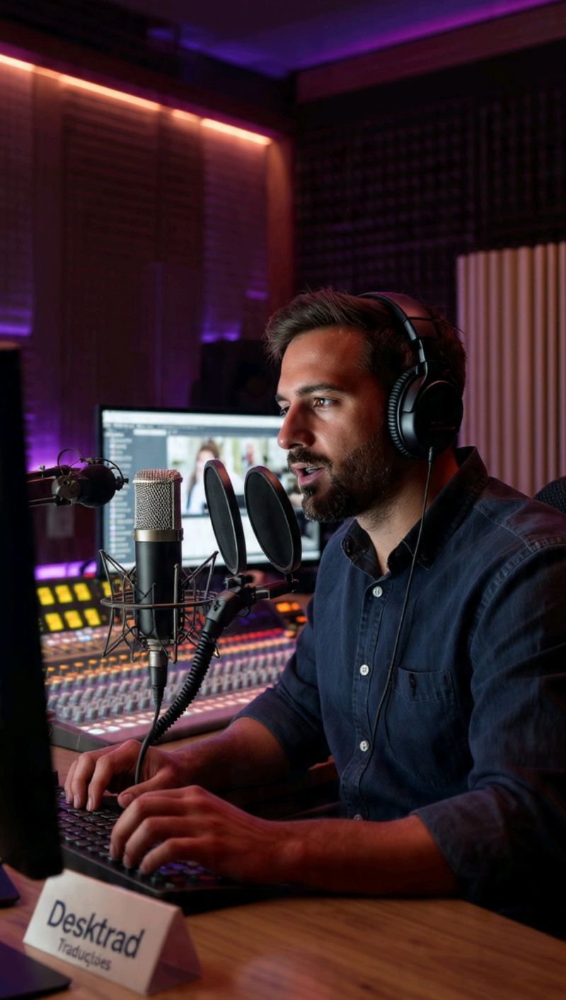
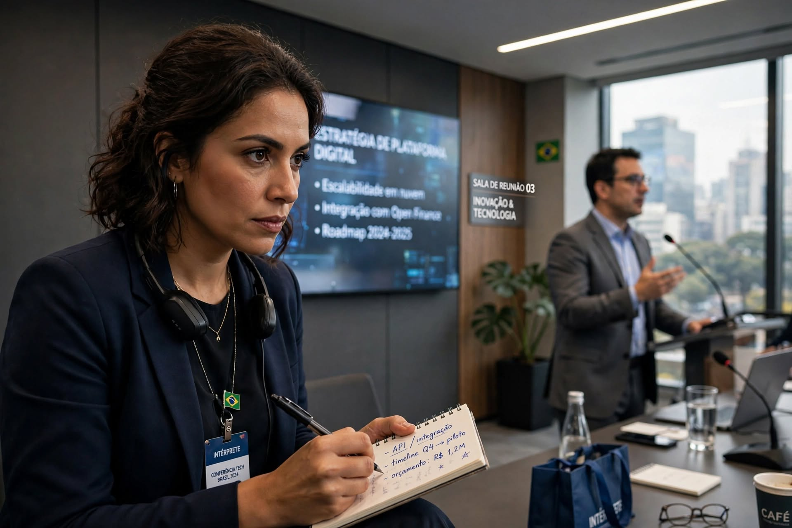

CLIQUE NO ICONE DE LUPA
Projetos que atravessam fronteiras
Tradução aplicada ao mundo real.
Uma seleção de frentes de trabalho que mostra como combinamos linguagem, setor e formato para entregar materiais prontos para uso.
09frentes
de projeto
de projeto






Mais que uma imagem
Cada entrega nasce de um contexto.
Os exemplos acima representam formatos e frentes de trabalho. O escopo final é definido a partir do material, dos idiomas e do objetivo de comunicação.
Falar sobre um projeto